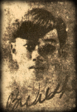

Ô! Hay buồn vương cây ngô đồng Vàng rơi! Vàng rơi! Thu mênh mông...
Đôi dòng tiểu sử
Bích Khê tên thật là Lê Quang Lương, sinh ngày 24 tháng 3 năm 1916 tại quê ngoại là làng Phước Lộc, huyện Sơn Tịnh, tỉnh Quảng Ngãi.
Ông xuất thân trong một gia đình nho học, có học trung học ở Huế, Hà Nội, nhưng rồi bỏ dở. Bích Khê sau dạy học tư ở Phan Thiết, Huế. Ông mất đêm 17 tháng 1 năm 1946 vì bệnh lao phổi.
Các phẩm tiêu biểu:
tập thơ Tinh Huyết (1939, tác phẩm duy nhất được xuất bản trong sinh thời của tác giả); tác phẩm chưa in bao gồm các tập thơ Mấy Dòng Thơ Cũ (thơ viết 1931-1936), Tinh Hoa (thơ viết 1938-1944), Đẹp (viết 1939).
Dòng thơ Bích Khê bao gồm ba mạch chính: thơ tượng trưng, thơ huyền diệu, và thơ trụy lạc. Ông đến với thơ mới với nhiều sáng tạo và cách tân độc đáo; nhiều tìm tòi trong nghệ thuật tạo hình, cấu trúc, ngôn từ; và nhiều cảm xúc lạ, đẹp. Một số bài có ý thơ phóng túng và lời thơ táo bạo.
Nhận xét của Chế Lan Viên:
"Nếu Nguyễn Bính là một miền đồng bằng thân thuộc thì Bích Khê là một đỉnh núi lạ. Có những nhà thơ làm thơ. Có những nhà thơ vừa làm thơ vừa đẩy lịch sử thơ ca duy tân thêm một bước. Có những nhà thơ đem đến một mùa lương thực. Lại có những nhà thơ cầm một dúm hạt giống mới trên tay. Khê thuộc vào hạng thứ hai."
Tác phẩm chọn lọc
Mộng Cầm Ca
Tỳ bà
Nhạc
Hiện Hình
Hoàng Hoa
Nghê Thường
Tranh Lõa Thể
Mộng
Sọ Người
Đồ Mi Hoa
Duy Tân
Hồ Xuân Hương
Ngũ Hành Sơn
Tài liệu tham khảo
Tinh Huyết, Bích Khê, NXB Hội Nhà Văn tái bản, 1995.
Tổng Tập Văn Học Việt Nam, tập 27, NXB Khoa Học Xã Hội, Hà Nội, 1990.
Thi Nhân Việt Nam, Hoài Thanh & Hoài Chân.
Việt Nam Thi Nhân Tiền Chiến, Nguyễn Tấn Long & Nguyễn Hữu Trọng.
Thi Ca Việt Nam Hiện Đại, Trần Tuấn Kiệt.
Đời Bích Khê, Quách Tấn.
Tuyển Tập Thơ Tiền Chiến, Hoài Việt biên soạn.
Thơ Mới - Những Bước Thăng Trầm, Lê Đình Kỵ.
Tạp chí Tác Phẩm Văn Học số 8.